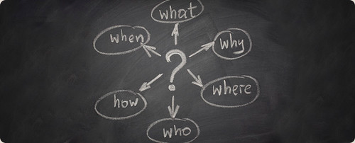
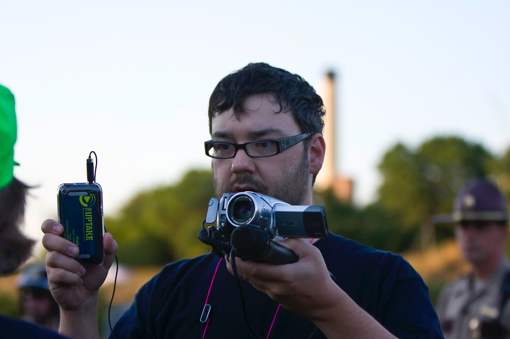

Za udeležence
Za izvajalce
Trainees Edition
Trainers Edition
MODUL 11: NOVINARSTVO, NOVE NOVINARSKE PRAKSE IN NJIHOVI DRUŽBENI UČINKI
Opis modula
Glavni namen tega modula je opisati glavne značilnosti novinarstva, razložiti vpliv novinarskih vrednot in opredeliti učinke novih novinarskih praks na družbo. Sekundarni namen je usmerjati izvajalce usposabljanja, ki želijo vsebino tega modula uporabiti pri usposabljanju svojih udeležencev. S temi cilji so predstavljene informacije o novinarstvu in njegovih učinkih ter smernice o tem, kako poučevati predmet.
Udeleženci, ki bodo uspešno zaključili ta modul, bodo znali:
- opredeliti novinarstvo z njegovimi cilji in značilnostmi
- opredeliti novice in njihove vrednote
- razumeti učinke novinarstva na demokracijo
- razumeti nove novinarske prakse
- razumeti novi habitat ustvarjanja novic in njegove učinke na ljudi.
Poleg tega bodo predavatelji, ki bodo uspešno zaključili ta modul, lahko pokazali, da razumejo, kako poučevati pojma post-resnica in lažne novice ter grožnjo, ki jo ustvarjata za demokracijo ter blaginjo ljudi in družb.
Struktura modula
Ta modul je sestavljen iz naslednjih delov:
- Opis modula (cilji, opis vsebine in učni rezultati)
- Struktura modula
- Smernice za udeležence usposabljanja
- Smernice za izvajalce usposabljanja (kako se pripraviti, metode za uporabo in nasveti za izvajalce usposabljanja)
- Vsebina (študijsko gradivo in vaje)
- Kviz
- Viri (reference in priporočeni viri ter videoposnetki)
Glavni cilji modula, opis vsebine in učni rezultati so pojasnjeni v delu Opis modula. Smernice za udeležence usposabljanja vključujejo navodila in predloge za udeležence izobraževanja. Smernice za izvajalce usposabljanja vodijo izvajalce usposabljanja skozi različne faze usposabljanja in vsebujejo nasvete, ki bi lahko bili koristni pri poučevanju predmeta. Vsebina vključuje vsa študijska gradiva in vaje, povezane z vsebino. Kviz vključuje vprašanja z več možnostmi izbire in/ali resnična/nepravilna vprašanja, s katerimi lahko udeleženci usposabljanja preverijo svoj napredek. Viri vsebujejo dve komponenti: reference in priporočene vire za nadaljnje branje in študij. Reference so seznam virov, navedenih v vsebinskem delu. Priporočeni viri so sestavljeni iz seznama dodatnih virov in videoposnetkov, ki jih priporočamo za branje in gledanje, da bi se naučili več o temi.
Smernice za udeležence usposabljanja
Od udeležencev izobraževanja se pričakuje, da bodo prebrali besedilo, si ogledali priporočene videoposnetke in izvedli vaje. Za dodatne informacije lahko poiščejo predlagane vire. Po končanem študiju vsebine učencem priporočamo, da opravijo kviz za oceno svojega napredka. Po potrebi lahko ponovno pregledajo študijsko gradivo.
Smernice za izvajalce usposabljanja
Smernice za izobraževalce vključujejo predloge in nasvete o tem, kako predstaviti vsebino tega modula odraslim.
Priprava
Priporočamo pripravo predstavitve (PowerPoint/Prezi/Canva), obogatene z vizualnim gradivom (slike in videoposnetki) in informacijami, ki temeljijo na raziskavah. Poleg tega je predlagano, da se za udeležence usposabljanja pripravi seznam priporočenih virov za boljše razumevanje predstavljenih konceptov.
Kako začeti
Na začetku lahko uporabite kratek kviz (3 do 5 vprašanj) v programu Kahoot ali vprašanja z Mentimetrom, da udeležence pritegnete k temi. Uporablja se lahko kot motivacijsko orodje in tudi kot orodje za preverjanje obstoječega znanja udeležencev o temi. Nekateri primeri vprašanj so lahko naslednji: Kakšna je vloga novinarja v družbi? Katere od spodaj naštetih lahko navedemo kot novinarske vrednote?
Učne metode
Med usposabljanjem se lahko kombinirajo različne učne metode. Na primer:
- predavanje
- diskusija
- delo v skupinah
- samorefleksija
Nasveti za izobraževalca
Ogrevanje
Učinkovit način vključevanja udeležencev in določanja skupnih pričakovanj o tem, kaj se bodo naučili, je postaviti nekaj predhodnih vprašanj o temi. To lahko storite s skupinskim delom, tako da udeležence usposabljanja pozovete k razpravi in zbiranju idej, lahko pa tudi individualno, tako da vsakega udeleženca prosite, naj svoje ideje zapiše na samolepilne lističe.
Dejavnost se lahko izvede na naslednji način:
- Vprašajte udeležence, ali poznajo povezavo med novinarstvom in demokracijo.
- Povabite udeležence usposabljanja, da podrobneje pojasnijo povezavo teh dveh pojmov.
- Vprašajte udeležence usposabljanja o njihovih izkušnjah z novimi novičarskimi okolji.
- Vprašajte udeležence usposabljanja, ali zaupajo novinarjem, in jih usmerite k razpravi o njihovih utemeljitvah.
Predstavitev učnih ciljev
Jasno je treba opredeliti cilj učne ure (opisati glavne značilnosti novinarstva, razložiti vpliv novinarskih vrednot in opredeliti učinke novih novinarskih praks na družbo). Po vprašanjih za ogrevanje bo lažje pojasniti cilje.
Predstavitev učnih vsebin
Med predstavljanjem vsebine poskrbite za interakcijo z udeleženci in jih spodbujajte k aktivnemu sodelovanju.
- Preden podate definicijo novinarstva in novic, udeležence prosite, da pripravijo svojo.
- Ko predstavljate informacije o spreminjajočem se novičarskem okolju, prosite udeležence, da jih najprej predstavijo svoj pogled.
- Preden podate informacije o novih novinarskih praksah, udeležence vprašajte, kako se zavedajo tega vprašanja in na katerih novičarskih platformah se napajajo.
- Ko predstavljate informacije o učinkih spreminjanja novic in medijskega habitata, udeležence vprašajte, ali se zavedajo teh učinkov novega okolja, in jih usmerite k razpravi o teh vprašanjih.
Zaključek
Naredite kratek povzetek učne ure in postavite nekaj vprašanj, ki bodo pomagala utemeljiti najpomembnejša sporočila, ki jih želite podati. Pri tem so vam lahko v pomoč naslednja vprašanja:
- Vprašajte udeležence o grožnjah, ki jih "slabo" novinarstvo predstavlja za družbo.
- Vprašajte udeležence usposabljanja, ali so se pripravljeni naučiti več o vrednotenju novic ali katere koli vrste informacij. To jim lahko pomaga pri pripravi na naslednje module o preverjanju dejstev.
Vsebina: Novinarstvo, nove novinarske prakse in njihovi družbeni učinki
Uvod: Kaj je novinarstvo?
Novinarstvo lahko opredelimo kot "prakso zbiranja, zapisovanja, preverjanja in poročanja o javno pomembnih informacijah". Zamisel o "objektivnosti" je osnovna razlikovalna lastnost novinarskih praks v primerjavi z drugimi nefikcijskimi pisanji. Od novinarjev se pričakuje;
- da ohranijo objektivno miselnost med intervjuji, raziskovanjem novic in poročanjem o svojih zgodbah,
- da ne bodo prepričevali bralcev, temveč jih bodo informirali,
- da sledijo primarnim virom, da bi pridobili vpogled (na primer intervjuji z ljudmi, ki jih je dogodek predvsem prizadel, pisni dokazi, arhivski dokumenti itd.).
V novinarske prakse je mogoče vključiti tudi mnenja, vendar se morajo novinarji zavedati in paziti, da je subjektivnost omejena na dela, kot so uvodniki, kolumne ali druge vsebine, ki temeljijo na mnenju (Purdue University, n.d.). Zlasti v digitalni dobi so se načini uživanja vseh vrst informacij, vključno z novicami, močno spremenili. To je vplivalo tudi na novinarske prakse v smislu zbiranja informacij za pripravo novic in njihovega razširjanja, medtem ko so njihove osnovne naloge ostale enake. Današnji novinarji ne pišejo le tradicionalnih novic, temveč opravljajo različne vloge, kot so priprava podkastov ali videoposnetkov na YouTubu, snemanje dokumentarcev, pomoč pri vodenju 24-urnih oddaj (prek televizije ali drugih kanalov družbenih medijev), s čimer nam pomagajo slediti novicam, zlasti prek interneta. Ta prizadevanja pomagajo javnosti izvedeti, kaj se dogaja v svetu, da lahko sprejema odločitve na podlagi informacij (Purdue University, n.d.).
Vloga novinarja in novinarska etika
"Osrednji namen novinarstva je zagotoviti državljanom točne in zanesljive informacije, ki jih potrebujejo za delovanje v svobodni družbi." (Vir: Potter, 2006, str. 3)
Informirani državljani so temelj demokracije. Ljudje potrebujejo informacije, da lahko sami odločajo o sebi. Novinarji in mediji so glavni vir teh informacij. Da bi zagotovili, da lahko novinarji svoje delo opravljajo tako, kot si želijo, so številne države vzpostavile pravno zaščito svobodnega tiska (Potter, 2006, str. 2).
Kliknite tukaj, če želite preveriti uvrstitev svoje države v Svetovnem indeksu svobode tiska.
Novinarji v svobodni družbi imajo tudi to skupno odgovornost: obveščati državljane. Pri tem morajo novinarji zagotavljati točne informacije, o njih poročati pošteno, popolno, neodvisno od zunanjih vplivov in biti popolnoma nepristranski pri zbiranju informacij in predstavljanju novic (Potter, 2006, str. 2; Quandt in Singer, 2009, str. 140).
"Novinarji niso zgolj prenosni trakovi za svoja stališča ali informacije, ki jih posredujejo drugi. Opravljajo izvirno poročanje, dejstev ne zamenjujejo z mnenji ali govoricami in sprejemajo tehtne uredniške odločitve. Glavna odgovornost novinarstva [...] je 'presojanje informacij'." (Vir: Potter, 2006, str. 9)
Danes lahko vsakdo, ki ima napravo, povezano z internetom, z blogom, spletno stranjo ali družbenimi mediji razširja kakršne koli informacije in lahko doseže tako široko občinstvo kot največji novičarski centri. Vendar ti viri novic niso nujno zanesljivi. Zaradi ogromne količine informacij je "resnica" za večino ljudi nejasna. Zato je vloga novinarjev za demokratično družbo postala pomembnejša kot kdaj koli prej. Narava tega poklica novinarja sili, da;
- izbira zanesljiv vir in informacije
- se zanaša na opazovanje iz prve roke, kadar koli je to mogoče
- se posvetuje z več viri in preverja informacije
- določa njihovo vrednost, preden jih posreduje javnosti
- poroča natančno, objektivno in pošteno
- opredeli in predstavi vire (razen v redkih primerih) pridobljenih informacij, da lahko občinstvo oceni njihovo verodostojnost (Potter, 2006, str. 8-9).
Ker je novinarski poklic odvisen od informacij, so novinarji v prvi vrsti zavezani javnosti (Potter, 2006, str. 2). Osveščanje javnosti je novinarjeva dolžnost, kar je izjemno pomembno za pravičnost in temelj demokracije (Society of Professional Journalists, 2014). Cilj novinarske etike je ugotoviti, kako se obstoječe norme uporabljajo za glavna etična vprašanja današnjega dne (Ward, 2009, str. 296).
V različnih virih so bili predstavljeni nekateri etični kodeksi novinarstva, ki zagotavljajo svobodno izmenjavo natančnih, poštenih in temeljitih informacij. Po podatkih Društva poklicnih novinarjev jih lahko strnemo v štiri osnovne naslove (Society of Professional Journalists, 2014):
- Iščite resnico in o njej poročajte: Etično novinarstvo mora biti natančno in pošteno. Novinarji morajo biti pri zbiranju, poročanju in razlaganju informacij pošteni in pogumni.
- Zmanjšajte škodo: Etično novinarstvo obravnava vire, subjekte, sodelavce in člane javnosti kot človeška bitja, ki si zaslužijo spoštovanje.
- Delujte neodvisno: Najvišja in glavna obveznost etičnega novinarstva je služiti javnosti.
- Bodite odgovorni in pregledni: Etično novinarstvo pomeni prevzemanje odgovornosti za svoje delo in pojasnjevanje svojih odločitev javnosti.
"V zadnjih letih smo bili priča propadu prepričanja, da strokovnjaki za novice lahko razločijo politično pomembna dejstva, zaradi česar volivci niso prepričani, ali lahko zaupajo sporočilom, ki jih ti strokovnjaki posredujejo. [...] Družbeni mediji so posameznikom in manjšim organizacijam omogočili, da so sporočila (morda točna, morda napačna) posredovali neposredno volivcem, brez posredovanja velikih novinarskih organizacij. [...] Vse to pomeni, da so volivci prisiljeni določiti vire novic, ki jim zaupajo. In ker različni viri novic širijo različna sporočila o istih zadevah, bodo volivci zdaj imeli bolj različne poglede na resničnost, kot so jih imeli pred desetletji." Jon Krosnick (Vir: Feder, 2020)
"Resnica" je eno glavnih vprašanj v novinarstvu. Vendar se je zlasti v zadnjem desetletju zaskrbljujoče povečalo število razprav o konceptu "resnice". Dejansko se je pokazalo, da se celo državljani civiliziranih družb ne morejo strinjati niti o nekaterih osnovnih dejstvih. Na tej točki je bolje razumeti opredelitev "novinarske" resnice. Tako kot znanstveniki tudi novinarji iščejo resnico, ki pojasnjuje svet in ljudem pomaga pri delovanju v življenju. Cilj novinarja je poiskati najboljšo dosegljivo različico resnice na določen dan. Da bi to dosegli, morajo novinarji zbrati čim več dokazov. Pri tem je beseda "mogoče" zelo pomembna, saj novinarji delajo v strogih rokih. Dokaze za resnico morajo zbrati v kratkem času. Zato si morajo novinarji in potrošniki novic vedno zastavljati to vprašanje: "Ali obstaja več pomembnih dokazov, ki jih je mogoče praktično zbrati?" (Hornik, Anzalone in Spikes, 2018, str. 32-33) Potrošniki novic morajo upoštevati, da se lahko zgodba sčasoma spremeni. V takšnih primerih, kot so naravne nesreče, je treba zgodbo spremljati, da bi zajeli najnovejše informacije, kot sta število smrtnih žrtev ali učinkovitost odziva politike. Te podrobnosti bodo sčasoma verjetno spremenjene, ne zato, ker bi novinar napačno navedel dejstva, temveč zato, ker se zgodba sčasoma razvija in se pojavljajo nova dejstva. Če želi oseba kot potrošnik novic izvedeti resnico, bi morala biti aktivni član novinarskega občinstva, tako da bi sčasoma zavzeto spremljala vprašanja in teme ter od novinarjev zahtevala nadaljnje raziskovanje zgodb (Hornik, Anzalone in Spikes, 2018, str. 35).
Novice in vrednote novic
Ali lahko novico opredelimo kot "informacijo, za katero prej niste vedeli"? Ali je "novica vredna pozornosti" samo zato, ker nečesa prej niste vedeli, ali samo zato, ker je nekaj novega? Med razmišljanjem o opredelitvi novic se vam lahko zastavljajo vprašanja o tem, kako narediti informacijo zanimivo ali vredno objave: Ali ta informacija govori o nekom, ki ga poznate, ali o vaši soseski? Ali neposredno vpliva na vaše življenje? Ali kaj spremeni (na primer vaše mnenje ali odločitve)? Ali ima kakšne konflikte? Se vam zdi čudna ali nenavadna? Kot oseba, ki porablja novice, si lahko zastavite več vprašanj, če morate neko informacijo označiti kot novico. Tako kot vi tudi novinarji postavljajo podobna vprašanja, da bi se odločili, kaj je vredno novice, ki jih imenujemo "novinarske vrednote" (Gillman, 2015, str. 280).
"Novice" avtorja popcornartsgfx je licenciran pod CC BY 4.0
Vrednote novic se ne uporabljajo le za odločanje o vključitvi ali izključitvi informacije ali gradiva, temveč tudi za odločanje o tem, kako bo o njem poročano, kdo bo pripravil novico in kako se bo pojavila na novičarski platformi (na primer v časopisu ali na spletni strani). Poleg tega novinarji in drugi medijski strokovnjaki pri ocenjevanju vrednosti novic upoštevajo osnovna merila, ki vključujejo kdo, kaj, kje, kdaj, zakaj in kako.
Čeprav je vrednote novic včasih mogoče označiti kot "spolzek pojem", to novinarjem ni preprečilo, da bi jim sledili, raziskovalcem pa, da bi poskušali ustvariti več taksonomij za pojasnitev pojma (O'Neill in Harcup, 2009, str. 162-163; Gillman, 2015, str. 286). Te vrednote so lahko v več virih navedene različno, vendar je bistvo naslednje (Potter, 2006, str. 5; Gillman, 2015, str. 282-283):
- Pravočasnost/aktualnost: Če se je nekaj zgodilo pred kratkim, je zaradi tega lahko vredno pozornosti. Aktualnost je odvisna od medija (npr. "pred kratkim" lahko pomeni drugače za tednik ali informativni kanal).
- Učinek: Če je po dogodku prisoten močan čustveni odziv občinstva (npr. umor ženske s strani bivšega partnerja) ali je zaradi dogodka prizadetih veliko ljudi (npr. poplave v mestu ali pandemija COVID-19), se to lahko šteje za novico.
- Človeški interesi: Novinarji upoštevajo, ali je informacija družbeno zanimiva ali pomembna. Incident na odbojkarski tekmi je lahko v novicah več dni, ker je to glavna tema pogovora v družbi.
- Novost: Informacije, ki razkrivajo nekaj, kar je redko, nenavadno ali celo bizarno, so potencialno vredne novice, saj izredni dogodki pritegnejo človeško radovednost. Kot v znanem pregovoru: "Če pes ugrizne človeka, to ni novica. Če pa človek ugrizne psa, je to novica!".
- Spornost/konflikt: Človeška narava se zanima za zgodbe, v katerih so prisotni konflikti, napetosti ali javne razprave. Konflikt ni le prepiranje spornih mnenj, ampak tudi zgodbe o zdravniku, ki se bori z boleznijo, ali državljanih, ki se upirajo krivici, prav tako predstavljajo konflikt.
- Pomembnost: Če je v dogodek vpletena znana oseba, tudi če gre za običajno stvar, lahko to postane novica. Lokalna prometna nesreča se lahko za več dni znajde na naslovnicah časopisov po vsem svetu, če je bil voznik znan glasbenik.
Vrednote novic lahko razumemo kot okvir za analizo pridobljenih informacij, da bi se odločili, ali so vredne objave. Zlasti če upoštevamo dobo, v kateri živimo in v kateri smo bombardirani z informacijami, bi morali uporabniki novic sprejeti ta merila, da bi analizirali, razumeli in odločali o vrsti informacij in njihovi verodostojnosti, namesto da se odločajo ali razumejo svet na podlagi osebnih izkušenj. Upoštevati je treba, da so "novice" rezultat vrste racionalnih presoj novinarjev ali drugih medijskih strokovnjakov, ljudje pa bi morali tovrstne informacije uživati s podobnimi presojami, zlasti v tej post-resnični dobi (Gillman, 2015, str. 286).
Spreminjajoče se značilnosti novic
Novice lahko izvirajo iz več krajev, vendar jih novinarji običajno najdejo v enem od naslednjih okolij (Potter, 2006, str. 7):
- Dogodki, ki so se zgodili naravno, kot so nesreče, katastrofe itd.
- Programirani dogodki, kot so srečanja, konference itd.
- Prizadevanja novinarjev.
Danes so novice del omrežene javne sfere, torej ekosistema medsebojno povezanih platform, ki širijo obseg sodelovalnega diskurza. Novinarski rezultati, ki so bili nekoč ekskluzivni, kot so novice, mnenja, podatki, informacije, naslovi, posodobitve in pogovori, so v današnjem komunikacijskem ekosistemu povsod (Perloff, 2020, str. 25-26). Kot posledica digitalizacije:
- je mogoče novičarske vsebine veliko hitreje distribuirati prek več platform za dostavo
- novice lahko postanejo interaktivne
- novičarske vsebine z različnih platform je mogoče vključiti v eno samo novico
- potrošnikom novic se lahko zagotovijo orodja medijske produkcije, s čimer se zabrišejo meje med medijsko produkcijo in potrošnjo (Bainbridge, Beasley in Tynan, 2015, str. 67-69).

"who-will-use-your-iphone-or-ipad-app" avtorja Ramotionblog je licenciran pod CC BY-ND 2.0
Izum telegrafa pred skoraj 150 leti je spremenil prenos informacij. Tehnologija je prinesla tehniko "obrnjene piramide" za pisanje/poročanje kjer so najpomembnejše informacije na začetku zgodbe, sledijo jim manj pomembne in tako naprej do konca, kar omogoča skrajšanje zgodbe od spodaj navzgor, da bi se prilegla razpoložljivemu prostoru. To se oblikuje z obliko "kdo, kaj, kje, kdaj, zakaj in kako", zlasti v tiskanih novicah (običajno imata prednost "kaj" in "kdo"), ki pomaga pri hierarhičnem razporejanju informacij in umeščanju vsebine v meje omejene postavitve strani. Čeprav nekateri viri trdijo, da je ta slog pisanja s pojavom "mehkih novic", ki se razširjajo prek novih medijev na internetu, zamrl, se zdi, da se bo še naprej uporabljal, saj omogoča kompaktno posredovanje informacij (Tynan, 2015, str. 337; Goc, 2015a, str. 33; Scanlan, 2003).
"Resnost krize (pandemije COVID-19) je okrepila potrebo po zanesljivem in natančnem novinarstvu, ki lahko obvešča in izobražuje prebivalstvo, hkrati pa nas je opomnila, kako odprti smo postali za zarote in napačne informacije. Novinarji ne nadzorujejo več dostopa do informacij, medtem ko večja odvisnost od družbenih medijev in drugih platform ljudem omogoča dostop do večjega števila virov in "alternativnih dejstev", od katerih so nekatera v nasprotju z uradnimi nasveti, zavajajoča ali preprosto napačna." (Vir: Newman, 2020, str. 10)
Izraz digitalni mediji ali novi mediji se uporablja za opredelitev mobilnih tehnologij (kot so mobilni telefoni) in internetnih medijev (kot so družbena omrežja, platforme za spletne igre, spletne oddajniške in novičarske platforme ter aplikacije itd.) Te platforme navadno spodbujajo svoje uporabnike k družbeni angažiranosti in vzpostavljanju nekakšnih mrež občinstva. Ta omrežja občinstva temeljito izpodbijajo stare modele oddajanja in način komuniciranja (na primer Facebook ima v drugem četrtletju leta 2021 skoraj 1,9 milijarde dnevno aktivnih uporabnikov (Statista Research Department, 2021)). Poleg tega digitalni mediji silijo ljudi k izjemno hitremu uživanju vseh vrst vsebin. Ker te platforme spodbujajo kulturo, ki temelji na interaktivnosti in virtualnosti, lahko rečemo, da vplivajo tudi na spreminjanje družb (Bainbridge, Beasley in Tynan, 2015, str. 67-69). Navade uživanja novic v svetu so se od množične uporabe interneta drastično spremenile. Konvencionalni mediji z novicami, kot so tiskani časopisi in televizijsko oddajanje, so začeli zapuščati svoje mesto družbenim medijem in drugim spletnim platformam, zlasti v primerjavi z zadnjim desetletjem (Newman, 2021, str. 10). To pomeni, da čakanje na novice, ki se zjutraj pojavijo v časopisu ali se predvajajo v redni informativni oddaji televizijskega programa, za večino ljudi ni več sprejemljivo (Bainbridge, Beasley in Tynan, 2015, str. 67-69).
To digitalno okolje je spremenilo naslednje značilnosti novic (Perloff, 2020, str. 22; Bainbridge, Beasley in Tynan, 2015, str. 68-69):
- Arhitektura novic je večplastna. Lahko se spremeni od zelo poglobljene v smislu vsebovanih informacij do vključevanja laži.
- Stili pisanja novic so se začeli spreminjati.
- Ustvarjanje občutka aktualnosti je postalo pomembnejše, ko so se novice začele širiti po digitalnih in družbenih medijih. Novinarji običajno pripisujejo manjši pomen temu, "kdaj" je zgodba nastala. Te informacije so običajno v poznejših odstavkih novice namesto v njenem uvodu ali naslovu. Ta občutek za aktualnost pomeni, da se lahko novica posodablja v določenem časovnem obdobju.
- Natančneje, v ospredju so postali atributi "kdo", "kaj" in "kje" zgodbe (kot so imena ljudi, kraji), ki so bili včasih v poznejših odstavkih vsebine novice namesto v njenem uvodu ali naslovu. Na ta način se na splošno zasleduje cilj, da vsebino novice opazijo iskalniki.
- Novinarjem ni treba čakati na uradno uredništvo, da odobri in objavi zgodbo, saj imajo običajno svoje račune v družbenih medijih. Vendar je treba upoštevati, da je lahko pri tvitanju novinarjev, zlasti med krizo, njihov način pisanja bolj subjektiven in v danem kontekstu namesto dejstev prevladujejo njihova mnenja.
- Tradicionalne novice so še vedno pomembne, vendar niso več vodilni vir. Obkrožajo jo (včasih so jo preplavile) različne platforme družbenih medijev, ki spreminjajo način pridobivanja in uživanja novic. Za novinarja lahko spremljanje različnih lokalnih opozoril privede do razkritja nove zgodbe. Toda z uporabo pametnega telefona lahko vsakdo spremlja tovrstne novice, saj je večino vsebin mogoče prilagoditi glede na lokacijo in jih je mogoče brez težav pridobiti z vklopom obvestil telefonske aplikacije. To vpliva tudi na to, kdo ustvarja novice, saj ima državljanski novinar enako možnost, da ujame zgodbo, kot tradicionalna novinarska redakcija.
- Ustvarjanje in posredovanje novic ni več monopol medijskih strokovnjakov. Ljudje so lahko del tega procesa preprosto z uporabo svojih telefonov, kar v to prakso prinaša nove glasove (glej: "Nove oblike novinarstva").
- Novice, ki jih je bilo nekoč enostavno kategorizirati, so postale bolj zapletene, saj se novinarske kategorije spreminjajo (glej: "Nove oblike novinarstva").
Nove oblike novinarstva
V današnjem digitalnem svetu morajo novinarji še vedno zbirati informacije in ustvarjati novice, ki morajo biti stvarne, točne, informativne, poštene in privlačne. Zahvaljujoč internetu so novinarjem na voljo nove možnosti za poročanje, razlago, deljenje in posodabljanje novic. Tako je novinarstvo postalo globalna dejavnost, ki poteka 24 ur na dan in 7 dni v tednu, pri čemer ni treba biti omejen na fizično pisarno ali uredništvo. Poleg tega v današnjem digitalnem okolju potrošniki novic zahtevajo, da novice dobijo z različnih platform, kot sta Facebook ali Twitter. Te nove vrste skupnosti (imenovane "virtualna množica") zahtevajo interaktivnost (želijo sodelovati z novicami od njihovega nastanka do prenosa), potrebujejo informacije v realnem času brez geografskih omejitev in večinoma v vizualni ali avdiovizualni obliki (Bainbridge, Beasley in Tynan, 2015, str. 91; Goc in Tynan, 2015, str. 392; Kochler, 2017, str. 11). Od novinarjev se ne pričakuje le, da ustvarjajo natančne novinarske vsebine v krajših časovnih okvirih kot v preteklosti, temveč morajo tudi aktivno sodelovati z občinstvom z različnih platform. Zaradi tega so se pojavili pojmi:
- večdimenzionalno/medijsko novinarstvo, pri katerem novinarji uporabljajo digitalne platforme (kot so blogi, družbena omrežja, spletne strani, mobilne aplikacije) tako za pridobivanje informacij za pripravo novic kot za njihovo razširjanje v javnosti (Bainbridge, Beasley in Tynan, 2015, str. 91; Goc in Tynan, 2015, str. 392),
- javno novinarstvo/civilno novinarstvo/državljansko novinarstvo/participativno novinarstvo/angažirano novinarstvo/v skupnost usmerjeno novinarstvo/mrežno novinarstvo, ki prikazuje novo obliko novinarstva, ki se osredotoča na potrebe skupnosti, ki ji služi, tako da ji omogoča tudi aktivno določanje programa in sodelovanje v procesu ustvarjanja novic (Coddington & Lewis, 2021; Philips, 2015, str. 90-91).

"Chuck na prizorišču – državljansko novinarstvo" avtorja Tony Webster je licenciran pod CC BY 2.0
Nova moč potrošnikov novic, ki so postali državljanski novinarji, prinaša javnosti različne priložnosti in prednosti. Na primer, na vojnem območju lahko te prostovoljne množice ljudi v realnem času obveščajo svet neposredno v središču bombnih napadov. Ti državljanski novinarji običajno delajo brez plačila in prostovoljno ter lahko ustvarjajo novinarske vsebine večinoma na spletu v različnih oblikah, od dobro pripravljenih podkastov ali kanalov na YouTubu do uredniških komentarjev na blogih ali Twitterju o temah, vrednih poročanja. Toda nove tehnologije vedno stopnjujejo konflikt med hitrostjo in natančnostjo, ki sta bistvo tradicionalnih novinarskih praks. Moč informacij lahko povzroči veliko škodo ljudem in družbam, če je zlorabljena. Zato morajo uporabniki novic k tem novim vrstam novinarskih dejavnosti pristopiti bolj kritično in morajo dvakrat premisliti, preden informacijo posredujejo drugim (Goc, 2015b, str. 489; Hornik, Anzalone in Spikes, 2018, str. 160-161). Po drugi strani pa lahko na primer državljanski novinarji s prispevkom k novicam pomagajo tudi novičarskim medijem, da popravijo svoje napake. Na primer v Egiptu so zaradi hitrega širjenja nepreverjenih informacij na internetu državljanski novinarji postali nekakšen inšpekcijski mehanizem, ki lahko prepozna netočnosti ali pristranskost v vsebini novic (Chan, 2014, str. 116). Če se bodo državljanski novinarji naučili in sprejeli temeljne novinarske vrednote, bo mogoče do neke mere preprečiti pristranskost novic, ta prizadevanja za širjenje resničnih informacij pa bodo lahko tudi pomemben prispevek k demokraciji. Z razmahom digitalizacije so se začele ustvarjati, shranjevati in dostopati večje količine informacij kot kdaj koli prej, kar se imenuje "veliki podatki". To številnim poklicem, vključno z novinarji, prinaša nove možnosti za analizo, za sprejemanje trdnih odločitev, oblikovanje racionalnih politik itd. Danes lahko novinarji z delom z ogromnimi količinami podatkov najdejo dokaze in predstavijo še nevidena dejstva ali spoznanja o neki temi, da bi razumeli, kako lahko rezultati vplivajo na javnost (npr. Wikileaks ). Na ta način raziskujejo zgodbe, ki so zakopane na internetu in ki sicer morda ne bi bile razkrite. To seveda zahteva nove novinarske veščine in specializacijo. Ti strokovnjaki se na splošno imenujejo "podatkovni novinarji" (oziroma računalniško podprto poročanje) (Bainbridge, Beasley in Tynan, 2015, str. 69, 91).
Učinki medijev na ljudi
Najnovejša informacijska revolucija je spremenila svet, saj omogoča objavo vseh informacij z računalnikom ali pametnim telefonom. Ljudje so bombardirani z velikimi količinami informacij. Te se lahko nanašajo ne le na napredek na področju zdravja, izobraževanja ali družbenega udejstvovanja, zaradi česar je svet večinoma boljši, ampak je lahko veliko teh informacij tudi zavajajočih (na primer gibanja proti cepljenju), ki lahko povzročijo veliko škodo javnosti. "Informacijska doba" nas sooča z naslednjimi pomembnimi izzivi, ki nas silijo, da ponovno razmislimo o načinih, kako porabljamo in delimo informacije (Hornik, Anzalone in Spikes, 2018, str. 11-12):
- Preobremenjenost z informacijami: Zaradi količine informacij je težje kot kdaj koli prej razlikovati med zanesljivimi in izmišljenimi informacijami.
- Kriza avtentičnosti: Z novimi tehnologijami je mogoče in lažje ustvarjati in širiti napačne informacije, ki so videti verodostojne.
- Hitrost v primerjavi z natančnostjo: Ljudje želijo informacije pridobiti čim hitreje, zaradi česar se je povečala verjetnost, da informacije ne bodo točne.
- Pristranskost občinstva: Ljudje so nagnjeni k uživanju in verovanju informacij, ki podpirajo njihove že obstoječe ideje (za več podrobnosti glej modul 3).
"Ljudje so bolj pripravljeni deliti članek kot ga prebrati [...]. To je značilno za sodobno porabo informacij. Ljudje si ustvarijo mnenje na podlagi povzetka ali povzetka povzetkov, ne da bi se potrudili, da bi se poglobili." (Vir: Dewey, 2016)
Ker vse vrste informacij, vključno z novicami, niso več monopol katerega koli poklica, so se ljudje znašli sami pred poplavo informacij in nekatere naravne kognitivne pristranskosti so postale del vsakodnevne rutine uživanja informacij (za več podrobnosti glej Modul 3). Družbeni mediji so prevzeli vodilno vlogo kot vir novic, v družbenih medijih pa so bile novice tudi razčlenjene. To pomeni, da ljudje ne naletijo na eno zgodbo iz določenega vira novic, temveč so pomešane z vsebinami iz številnih drugih virov. To se precej razlikuje od gledanja informativne oddaje ali branja časopisa, kjer vse vsebine prihajajo iz istega vira (American Press Institute, 2016, str. 20). Razvoj potrošnika novic v proizvajalca novic je povečal širjenje napačnih informacij (Hornik, Anzalone in Spikes, 2018, str. 155). Zlasti med krizo, predvsem zaradi naravnega preživetvenega instinkta, so ljudje nagnjeni k zelo hitremu širjenju kakršnih koli informacij, da bi zaščitili sebe in svoje bližnje. Glede na raziskavo je 59 odstotkov povezav na družbenih omrežjih deljenih brez branja. Razkrila je tudi, da je tovrstno "deljenje tudi brez klika" resnično pomembno pri določanju, katere novice se širijo in katere preprosto izginejo z radarja javnosti. To pomeni, da ta navada deljenja dejansko oblikuje skupnosti s skupnimi političnimi in kulturnimi agendami brez trdnega ozadja (Dewey, 2016). V sorodni raziskavi so raziskovali motive ljudi za izmenjavo informacij in ugotovili naslednje motive (Stearns, 2016):
- Ljudje želijo pomagati: Toliko svežih novic zaradi kanalov družbenih medijev obvladuje življenja ljudi kot še nikoli prej. Te vsebine so lahko vse od pisnih informacij do videoposnetkov, večinoma nefiltrirane in neobdelane. Posledica je lahko "naraščajoč občutek nemoči". Ko se soočijo s tragedijo, želi večina ljudi pomagati drugim tako, da čim hitreje razširi informacije in opozori svoje sledilce, kar večinoma pomaga dodati kontekst kaosu. Hitenje z deljenjem brez preverjanja kakršnih koli informacij lahko drugim bolj škodi, kot pa pomaga.
- Ljudje želijo razumeti svet: Ko se pojavijo izredne novice, je več neznanega kot znanega. Ljudje so nagnjeni k razpravljanju z drugimi, da bi razumeli, kaj se dogaja, da bi potrdili zgodbo v svojih mislih ali odmevali svoj pogled na svet, kar se na splošno konča z razširjanjem govoric, kot da so dejstva. V takih časih so govorice nekakšen mehanizem spoprijemanja, ki zapolni vrzeli trenutnega znanja ali pridobljenih informacij, zlasti v razmerah nevarnosti in negotovosti.
- Ljudje se želijo počutiti kot del skupne izkušnje: Zlasti kadar se ljudje soočajo z nejasnostjo, brezupom ali tesnobo, se navadno zbirajo v digitalne množice ob spletnih prenosih v živo ali pod hashtagi. V teh časih se deljenje pogosto počuti kot empatija. V takšnih primerih, da bi se mudilo deliti občutke, se večinoma konča z deljenjem prirejenih slik in napačnih informacij o dogodku. Za osebo, ki deli, ni treba, da je to res, ampak se mora le počutiti resnično.
- Čustvena omrežja namesto informacijskih omrežij: Čeprav je ljudi, ki med krizo širijo napačne informacije, zlahka obsoditi, v resnici instinkt za deljenje poganja zapleteno omrežje motivacij in čustev. Čustva spodbujajo deljenje na načine, ki otežujejo iskanje resnice v trenutku krize. Razlog, da večina ljudi, ki širi napačne informacije, te deli, je običajno v tem, da jih bolj zanimajo čustva, ki jih informacija izzove. Če bi to v preteklosti storila institucija, bi bilo to "slabo novinarstvo". Ko družbeni mediji delujejo kot čustvena in informacijska omrežja, to postane težava. Kajti to, kar ljudje delijo (čustva), in to, kar želijo najti (dejstva), sta pogosto v konfliktu.
Novice so lahko tudi preobsežne, saj je širjenje slabih novic običajno hitrejše od širjenja dobrih (Bushman, Williams in Wittenberg-Moerman, 2013, str. 29). V takem obdobju, ko se ljudje pogosto srečujejo s slabimi novicami, so nekateri psihološki učinki neizogibni, kot so naraščajoč občutek nemoči, videnje sveta kot temnejšega kraja, bolj pesimističen pogled na možnosti itd. V takšni psihologiji lahko vpliva na proces odločanja ljudi (Singal, 2014), kar lahko vpliva na različne velikosti mejnikov v življenju, vključno z izidom volitev za del gibanja proti cepljenju. Vse več ljudi navaja, da se izogibajo novicam, da bi to premagali (Dahl in Riesman, 2014). Ena od raziskav je pokazala, da se skoraj tretjina (32 %) ljudi z vsega sveta namenoma izogiba novicam (Newman, 2019, str. 26). Po nekaterih poročilih se novicam izogibajo, ker se jim zdijo preveč žalostne ali stresne in ker jim ne zaupajo (Coddington & Lewis, 2020).
Da bi premagali te izzive, morajo ljudje k informacijam pristopiti bolj analitično z naslednjimi načeli, ki jih je treba uporabljati za vse vrste medijskih platform za novice v vsakdanjem življenju (Hornik, Anzalone in Spikes, 2018, str. 11, 161; Singal, 2014):
- V pridobljene informacije je treba podvomiti, namesto da bi jih preprosto zaužili.
- Bodite potrpežljivi in spremljajte zgodbo, ko se začnejo pojavljati dejstva in resnica.
- Informacije preverite, preden jih delite na kateri koli platformi ali s komer koli.
- Ne upoštevajte ranga in priljubljenosti kot približka zanesljivosti informacije.
- Zavedajte se, da pošiljatelj informacij pogosto ni njihov vir.
- Zavedajte se prikritih predsodkov človeškega spoznavanja, ki jih vsi nosimo v sebi.
- Zavedajte se, da razlog za soočanje z veliko slabimi novicami ni nujno v tem, da je svet po naravi zloben, temveč v tem, da imajo lahko tako izdajatelji novic kot potrošniki spodbude, da razširjajo eksplozivno negativne novice.
Ti poudarki ne bodo pomagali le novinarjem, da bodo odgovorni do javnosti, ki ji služijo in jo obveščajo (Hornik, Anzalone in Spikes, 2018, str. 11), temveč tudi javnosti, da se bo ozavestila o novičarskem okolju in pridobila nove veščine za preživetje v tej post-resničnostni dobi.
Vaja
- Kliknite tukaj in preverite uvrstitev svoje države v svetovnem indeksu svobode tiska World Press Freedom Index. Razpravljajte o pomenu tega indeksa. Kaj menite o prednostih ali slabostih, da smo na vrhu ali na dnu tega seznama?
- 2. Prepoznajte novice z različnih platform, kot so spletne strani lokalnih in nacionalnih časopisov ter druge vrste spletnih platform za novice (angl. news outlets). Poskusite presoditi o novinarskih vrednostih posamezne zgodbe. Ste na primer zaznali zgodbo, ki je bila objavljena zaradi bližine ciljnih sledilcev/bralcev novičarske platforme ali časopisa? Ali pa ste zaznali zgodbe, ki so bile objavljene zaradi pomembnosti ene ali več oseb, na katere se zgodba osredotoča?
Kviz
Reference
American Press Institute, (2016). A New Understanding: What Makes People Trust and Rely on News. Retrieved from: https://www.americanpressinstitute.org/wp-content/uploads/2016/04/What-Makes-People-Trust-and-Rely-on-News-Media-Insight-Project.pdf.
Bainbridge, J., Beasley, C. & Tynan, L. (2015). The Digital and Social Media Environment. In Bainbridge, J., Goc, N I., & Tynan, L. (Eds.). Media and Journalism: New Approaches to Theory and Practice (pp. 65-92). Melbourne: Oxford University Press.
Bushman, R.M. Williams, C.D. & Wittenberg-Moerman, R. (2013). The Informational Role of the Media in Private Lending. Retrieved from: http://www.utah-wac.org/2014/Papers/williams_UWAC.pdf.
Chan, Y.Y. (2014). Journalism and Digital Times: Between Wider Reach and Sloppy Reporting. Retrieved from: https://www.academia.edu/9774272/Journalism_and_Digital_Times_Between_Wider_Reach_and_Sloppy_Reporting.
Coddington, M & Lewis, S. (2021, May 11). Why do people avoid news? It’s not just because it makes them feel bad. NiemanLab. Retrieved from: https://www.niemanlab.org/2021/05/why-do-people-avoid-news-its-not-just-because-it-makes-them-feel-bad/.
Coddington, M. & Lewis, S. (2020, March 6). Why avoiding the news is a social habit. RQ1. Retrieved from: https://rq1.substack.com/p/why-avoiding-the-news-is-a-social.
Dahl, M. & Riesman, A. (2014, August 8). What news story are you most freaked out about? The Cut. https://www.thecut.com/2014/08/what-news-story-are-you-most-freaked-out-about.html.
Dewey, C. (2016, June 16). 6 in 10 of you will share this link without reading it, a new, depressing study says. Washington Post. Retrieved from: https://www.washingtonpost.com/news/the-intersect/wp/2016/06/16/six-in-10-of-you-will-share-this-link-without-reading-it-according-to-a-new-and-depressing-study/.
Feder, S. (2020, February 27). Stanford researchers discuss journalism and democracy in lead up to Super Tuesday. Stanford News. Retrieved from: https://news.stanford.edu/2020/02/27/journalism-and-democracy/.
Gillman, S. (2015). News Values and News Culture in a Changing World. In Bainbridge, J., Goc, N I., & Tynan, L. (Eds.). Media and Journalism: New Approaches to Theory and Practice (pp. 280-293). Melbourne: Oxford University Press.
Goc, N. (2015a). The First Mass Medium. In Bainbridge, J., Goc, N I., & Tynan, L. (Eds.). Media and Journalism: New Approaches to Theory and Practice (pp. 24-44). Melbourne: Oxford University Press.
Goc, N. (2015b). Case Study 5: Free Speech and Journalism in the 21st Century. In Bainbridge, J., Goc, N I., & Tynan, L. (Eds.). Media and Journalism: New Approaches to Theory and Practice (pp. 485-491). Melbourne: Oxford University Press.
Goc, N. & Tynan, L. (2015). Ethics in Communication. In Bainbridge, J., Goc, N I., & Tynan, L. (Eds.). Media and Journalism: New Approaches to Theory and Practice (pp. 382-404). Melbourne: Oxford University Press.
Hornik, R., Anzalone, J. & Spikes, M. (2018). GetNewsSmart: A Guide to Understanding the Key Concepts of News Literacy. New York: The Center for News Literacy.
Kochler, H. (2017). Idea and politics of communication in the global age. In M. Friedrichsen & Y. Kamalipour (Eds.). Digital Transformation in Journalism and News Media, Media Business and Innovation (pp. 7-16). Cham: Springer.
Newman, N. (2019). Section 1: Executive summary and key findings. In N. Newman, R. Fletcher, A. Kalogeropoulos ve R. K. Nielsen (Eds.), Reuters Institute Digital News Report 2019 (pp.8-31). Reuters Institute for the Study of Journalism. Retrieved from: https://reutersinstitute.politics.ox.ac.uk/sites/default/files/inline-files/DNR_2019_FINAL.pdf.
Newman, N. (2020). Section 3: Country and market data: Europe. In N. Newman, R. Fletcher, A. Schulz, S. Andı & R. K. Nielsen (Eds.), Reuters Institute Digital News Report 2020 (pp.9-31). Reuters Institute for the Study of Journalism. Retrieved from: https://reutersinstitute.politics.ox.ac.uk/sites/default/files/2020-06/DNR_2020_FINAL.pdf.
Newman, N. (2021). Executive summary and key findings. In N. Newman, R. Fletcher, A. Schulz, S. Andı, C.T. Robertson & R.K. Nielsen (Eds.), Reuters Institute Digital News Report 2021 (pp.9-30). Reuters Institute for the Study of Journalism. Retrieved from: https://reutersinstitute.politics.ox.ac.uk/sites/default/files/2021-06/Digital_News_Report_2021_FINAL.pdf.
O’Neill, D. & Harcup, T. (2009). News values and selectivity. In K. Wahl-Jorgensen, & T. Hanitzsch (Eds.). The Handbook of Journalism Studies (pp. 161-174). New York: Routledge.
Perloff, R.M. (2020). The Dynamics of News: Journalism in the 21st-Century Media Milieu. New York: Taylor & Francis.
Philips, A. (2015). Journalism in Context: Practice and Theory for the Digital Age. London: Routledge.
Potter, D. (2006). Handbook of Independent Journalism. Washington, DC: Bureau of International Information Programs, U.S. Department of State.
Purdue University. (n.d.). Journalism and Journalistic Writing: Uvod. Retrieved from: https://owl.purdue.edu/owl/subject_specific_writing/journalism_and_journalistic_writing/index.html.
Quandt, T. & Singer, J.B. (2009). Convergence and cross-platform content production. In K. Wahl-Jorgensen, & T. Hanitzsch (Eds.). The Handbook of Journalism Studies (pp. 130-144). New York: Routledge.
Scanlan, C. (2003). Birth of the Inverted Pyramid: A Child of Technology, Commerce and History. Retrieved from: https://www.poynter.org/reporting-editing/2003/birth-of-the-inverted-pyramid-a-child-of-technology-commerce-and-history/.
Singal, J. (2014, August 8). What all this bad news is doing to us. The Cut. Retrieved from: https://www.thecut.com/2014/08/what-all-this-bad-news-is-doing-to-us.html.
Society of Professional Journalists (2014). SPJ Code of Ethics. Retrieved from: https://www.spj.org/ethicscode.asp.
Statista Research Department. (2021). Facebook: Number of Daily Active Users Worldwide 2011-2021. Retrieved from: https://www.statista.com/statistics/346167/facebook-global-dau/.
Stearns, J. (2016). Why do People Share Rumours and Misinformation in Breaking News? Retrieved from: https://firstdraftnews.org/articles/people-share-misinformation-rumors-online-breaking-news-events/.
Tynan, L. (2015). Subediting, News Language and Convention. In Bainbridge, J., Goc, N I., & Tynan, L. (Eds.). Media and Journalism: New Approaches to Theory and Practice (pp. 330-350). Melbourne: Oxford University Press.
Ward, S.J.A. (2009). Journalism ethics. In K. Wahl-Jorgensen, & T. Hanitzsch (Eds.). The Handbook of Journalism Studies (pp. 295-309). New York: Routledge.
WikiLeaks. (2021, September 13). In Wikipedia. Retrieved from: https://en.wikipedia.org/w/index.php?title=Oil_painting&oldid=929802398.
Priporočeni viri
Potter, D. (2006). Handbook of Independent Journalism. Washington, DC: Bureau of International Information Programs, U.S. Department of State. (Chpt.1: “What is news?” pp. 4-11; Chpt. 7: “Ethics and law” pp. 54-60).
Hornik, R., Anzalone, J. and Spikes, M. (2018). GetNewsSmart: A Guide to Understanding the Key Concepts of News Literacy. New York: The Center for News Literacy. (Chpt. 5: “Is It Journalism? How to Navigate the Information Neighborhoods?” pp. 60-70).
IFJ. (n.d.). Global Charter of Ethics for Journalists. Retrieved from https://www.ifj.org/who/rules-and-policy/global-charter-of-ethics-for-journalists.html
Priporočeni videoposnetek
Stony Brook Center for News Literacy (2021). Stony Brook University Journalism Professor Steven Reiner applies VIA to the NEWS information neighborhood.